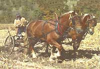
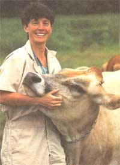
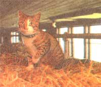

COUNTRY VET
Pest control for livestock and pets.
The greatness of a nation and its moral progress may be judged by the way its animals are treated.
-Mahatma Ghandi
As medicine moves into more and more technologized eras, we are developing a health-care system that often A views the patient as a collection of moving parts, all fixable. Advances in medicine for the most part have projected our nation farther into exceptional health care than most peoples will ever know. Yet, are these advances converged on the fixable part to the extent that they are discompassionate and lifeless to the individual (person and animal)? Imbalances of general health and lack of common compassion and common sense have the same negative and disquieting effects on our companion animals as they do us. It is more imperative than ever that we find methods of wellness, prevention, and care that have broader perspectives for us and our animals. MOTHER strives to communicate this urgency with an understanding that healing for the least among us (through oftentimes simple methods) will lead to the health of the entire individual and a betterment of the community. I hope you continue to join us in this concern with your questions and letters.
Our Jersey cows have a disease known as laminitis. What can we do to prevent it? These cows are housed outdoors mostly. Their lameness was noticed first a few months ago when the ground got softer.
-Will Davis
New Ulm, MN
An Ithaca Jersy Recceives some TLC from Dr. Looney.
Much of the modern dairy cow's difficulty with hoof disorders is directly related to abnormal hoof growth caused by laminitis. Inflammation and disruption of the lamina (the part of the foot that suspends the bones in the hoof) results in unusually unrestricted hoof growth most often detected as elongated toes, rings in the hoof wall, and overgrown outside hoof walls. Since the hind legs support more weight than the front legs, the outside rear claws and the inside (medial) front claws bear a majority of the problem in lame cows.
Laminitis is an inflammation of the suspending laminae, the tissue that holds the hoof on the foot. There are two forms, acute and chronic. The acute form is very painful and all four feet may be affected to the point that the animal doesn't stand or move. First-calf heifers are most severely affected. Common factors that contribute to the development of laminitis include acute or chronic rumen acidosis or endotoxemia (rapid or high concentrate change in feed), foot trauma such as concrete confinement, improper claw trimming or overgrowth, poor conformation, and continued exposure to moisture and acids in manure and urine. Some nutritional deficiencies and some viral infections (BVD) may cause laminitis as well.
The chronic form of laminitis is more prevalent. Cows with this form of disease have pancake-shaped feet, very dished and overgrown. The abnormal shape forces cows to bear weight abnormally leading to joint and ligament disorders. The wall-sole junction at the white line often separates and hemorrhages (black spots) appear. These often progress into ascending infections and resultant sole ulcers. The long toes cause cattle to rock back on their heels and heel erosions develop.
Dietary management (decreasing concentrate), environmental modification (providing some dryness), and diligent claw trimming (biannually) may help reduce the incidence of laminitis, although the former is probably most important.
What are the best worm-control methods? Our team of Belgians is housed in a shed with tie stalls and turned out daily when they aren't used for work.
-Zelma Roberts
Waverly, IA
The optimum parasite-control program ensures the horses' health, while conserving the efficacy or power of the anthelmintic or dewormer and protecting the environment where the animals reside. There are several points that need to be covered to ensure a good parasite-control program.
First, make sure you're using an effective dewormer. Horse farms can be tested annually for resistance that develops in commonly used dewormers by doing parasite egg counts before and after treatment. Turn a sample into your veterinarian. Second, while it's usually impossible to weigh horses on a farm, use a girth tape to more accurately estimate the weight of the animals. Weight is important because dosages, based on weight, must be as exact as possible; with the safety of most modern anthelmintics, it is probably better to slightly overdose than to underdose. Underdosage selects for resistant strains of worms. You want to use the minimal EFFECTIVE dose a minimal amount of times per year.
Third, consider different treatment strategies based upon climate and temperature if the animals are common grazers. For instance, in the northern United States, where a spring and summer rise in equine fecal egg counts has been observed, a spring and summer treatment regimen was just as effective as year-round treatment recommended by the manufacturer of certain dewormers. Consider also the pasture, especially if youngsters graze it. Pasture sweeping and vacuuming, alternate grazing with cattle or sheep, or prolonged pasture rotation and harrowing may really help with environmental control. Rotate anthelmintic classes annually; this helps reduce the drug resistance that develops. It's also a good policy to treat new arrivals to the farm with a nonbenzimidazole drug, the easiest class of drugs to which worms become resistant.
My thirty-something horse grazes the grass and clover lawn. Creeping Charlie has invaded the yard. The horse doesn't graze this, but I'd like to get rid of it using boron. Should I?
-Georgiana Srachia
Homewood, IL
Creeping Charlie, also known as Ground Ivy, Gill over the Ground, or Glechoma, is a short-branching plant that invades many lawns. It has a very short, square stem and may have a light-lavender tubular flower when in bloom. Due to a toxic substance in the leaves, it causes a syndrome of sweating, salivation, and difficult breathing in horses when consumed. Horses usually find it offensive to munch on and once tasting it, will likely turn away from the "weed."
Borax is used both as a herbicide and as a soil sterilant and is toxic to animals if consumed in large doses. Many herbicides, like borax, may cause a contact dermatitis around the lips and nose of large animals, as well as non-specific gastroenteritis and muscle weakness. Toxicity is supposedly low when the chemicals are applied using manufacturer's directions, but I suspect it may be a better idea to provide the animal with some quality hay in another area of the yard while the weedy area is being treated with the Borax. Always think of drainage of the Borax-laden soil.
It may also not be a bad idea to supplement with some hay regardless, as many of the common yard and lawn plants, even if eaten in small doses may cause some signs of colic and toxicity.
I recently picked up a barn cat and low and behold, it came with lice. How do I get rid of these things? Are they contagious to humans?
-Jean G. Haaland
El Dorado, KS
Pediculosis is infestation with lice. These pests are small wingless insects that are relatively host specific (meaning, will generally not infest humans!) and survive only a few days off their victim animals. Lice are well-adapted parasites and usually more of a nuisance than a threat to their hosts. They accumulate under mats of hair and around the ears and body openings. There are two types of lice: sucking lice and biting lice.
Sucking lice produce a blood loss or anemia and debilitate the animal. Biting lice generally cause severe itching.
Lice infestation is often more prevalent in the winter and early spring due to the growth of longer, heavier hair coats and closer contact among animals with the cold and dampness. Diagnosis is easy-one can usually see these pests crawling on long hairs. Treatment should involve all animals associated with the lice-ridden cat. Thick mats and long hairs should first be clipped away. After a regular soap and water shampoo, the animals should be soaked or sprayed thoroughly with a pyrethrin flea spray. Stronger medications or insecticides are not necessary as these insects are usually susceptible to common flea shampoos, sprays, and powders. It is advisable to clean the bedding and premises even though the lice usually do not live when they are off the host.
Our Border collie has a history of back problems frequently treated with a cortisone injection. We are worried about the effect of the steroids on her health and wonder whether acupuncture would help?
-Ken Minz
Asheville, NC
The classic disc disease seen in our companion animal dogs is only one syndrome that may manifest itself as "back pain." Sadly enough, several other diseases such as meningitis, hip dysplasia, or chronic kidney disease may also make the animal appear as if it has back pain. Thus, I would first suggest making sure that none of the above or other related problems are occurring. If indeed the problem is truly orthopedic in nature, possibly secondary to chronic vertebral instability or to strained back musculature, then acupuncture may indeed help.
In mild, lower-back disc disease, back pain is frequently present and the animals are reluctant to walk upstairs, or may cry when moving or being picked up. These animals would benefit from REST, as well as relaxation of their back muscles through any means-acupuncture, heat, or gentle massage. In more severe lower-back disc disease, the dog may show some signs of nerve deficit such as knuckling of the toes or instability of the hind limbs. Acupuncture may assist these animals as well, although the effect may not be as profound.
The exact mechanism of action through which acupuncture works is not yet fully understood. Some researchers believe that acupuncture may destroy muscle pain and hence, shortening and stiffness. Acupuncture may activate regrowth of destroyed nerves if the framework of the nerves itself is not destroyed. It also decreases local spinal inflammation and prevents release of toxic substances from damaged tissues.
Acupuncture involves the insertion and stimulation of needles at specific points in the body. Some practitioners use electros-timulation or laser treatment at the points instead of or in addition to needles. Heat can also be applied to the needles to further increase stimulation. Treatment intervals vary from once daily to once every two weeks. Supportive treatment includes rest (even confinement to allow the muscles to heal), proper diets (+/-laxatives), and supportive care of urinary and bowel habits if the back is very injured. Acupuncture results for certain forms of disc disease are comparable to those of surgery and drug therapy, without the side effects of chronic steroid usage.
|
 |
 |
 |